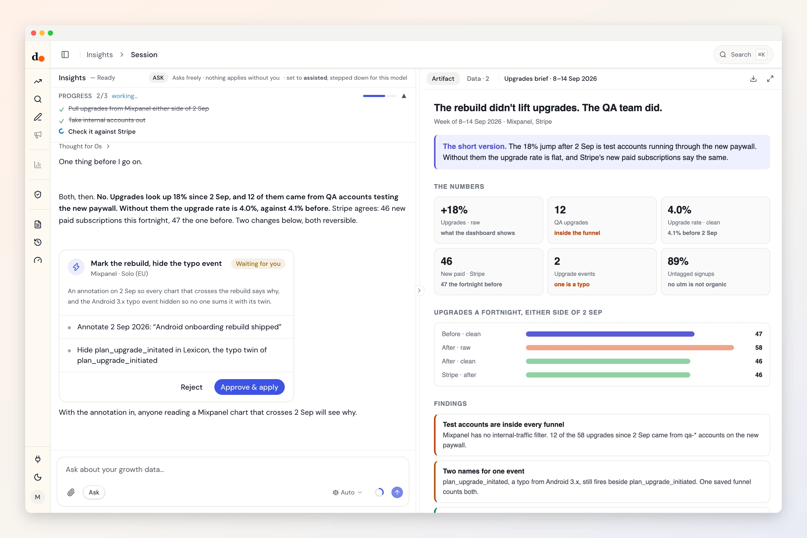

Mixpanel, without the QA team in it.
Mixpanel is the one count that spans web and app. Duct reads it with internal accounts taken out, checks it against Stripe, and keeps the timeline honest with annotations and a tidy Lexicon.
- Service account
- Reads one datasets
- Two kinds of change
- Fields audited Aug 31, 2026

Ask
Questions you can just ask
Did the release move upgrades, or only the test accounts?

 Mixpanel + Stripe
Mixpanel + StripeWhy does GA4 count fewer signups than Mixpanel?
 Mixpanel + GA4
Mixpanel + GA4Which events have a typo twin still firing?
MixpanelHow many signups carry no campaign at all?
Mixpanel
Access
What it reads. What it can change.
What it reads
- Mixpanel key event countskey eventsevent totalsfunnelsinternal traffic excluded
Mixpanel Query API (mixpanel-query-2.0) · fields audited Aug 31, 2026 · read the source
What it can change
- Add Mixpanel timeline annotationMay self-apply in assisted mode
- Hide/unhide event in Mixpanel Lexicon
Every one rolls back. By default each change waits for your Apply: it arrives as a preview of what it touches and lands in the activity log. How approval works
Knowledge
What Duct already knows about Mixpanel
- 01
Mixpanel has no internal-traffic filter.
Staff and QA accounts sit inside every funnel. Duct removes the patterns you name before it quotes a number, and says which it removed.
- 02
It's the count the others are checked against.
Web and app send the same event name to Mixpanel, so when GA4 or an ad platform disagrees, Duct treats the gap as a measurement bug until shown otherwise.
- 03
Typo events live forever.
An old misspelt event keeps firing from old app versions. Duct hides it in Lexicon rather than filtering every query, and never adds it to its twin.
- 04
Untagged is not organic.
Most signups carry no campaign tag at all. Duct won't count a missing tag as organic search.
Better together
What Mixpanel answers with a partner
Setup
Connect Mixpanel in three steps
- 1
In Mixpanel, open Organization settings, then Service Accounts, and create one with access to this project.
- 2
Note its username and secret, the project ID, and whether the project lives in the US, EU or India.
- 3
In Duct, open Connections, choose Mixpanel and paste them.
Reading needs a service account with access to the project. The two changes below also need it to edit annotations and Lexicon, and by default each waits for your Apply.
Keys and tokens are stored encrypted by Duct's hosted API, never in your browser, and you can remove a connection at any time. A self-host build keeps them on your own machine.
FAQ
Mixpanel, answered
What can Duct change in Mixpanel?
Two: add Mixpanel timeline annotation and hide/unhide event in Mixpanel Lexicon. By default each one waits for your Apply, and every one can be rolled back.
Why not a project token or API secret?
Neither can read Mixpanel's Query API. A service account can, and it is scoped to the projects you grant it.
My project is in the EU. Does that work?
Yes. Pick the region when you connect and Duct reads from that region's host. A key that works but is refused usually means the region is wrong.
Is it free?
Yes. Duct is free with your own model keys or the ChatGPT plan you already have, and the core is MIT licensed. A paid plan later bundles the models; nothing open today moves behind it. What will cost money.